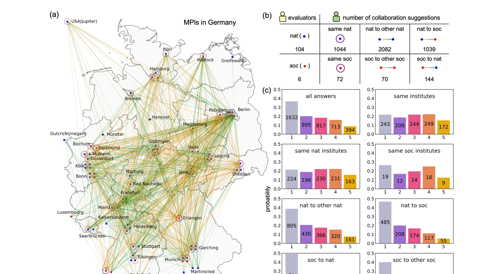

Essence

Fig. 1. SciMuse suggests research ideas or collaborations using a knowledge graph and GPT-4. (a), Knowledge
SciMuse는 5,800만 개의 연구논문과 LLM을 활용하여 개인화된 연구 아이디어를 생성하고, 100명 이상의 연구 그룹 리더의 평가를 통해 AI 생성 아이디어의 흥미도를 예측하는 시스템을 제시한다.
저자: Xuemei Gu, Mario Krenn | 날짜: 2025-01-07 | DOI: 10.48550/arXiv.2405.17044
Fig. 1. SciMuse suggests research ideas or collaborations using a knowledge graph and GPT-4. (a), Knowledge
SciMuse는 5,800만 개의 연구논문과 LLM을 활용하여 개인화된 연구 아이디어를 생성하고, 100명 이상의 연구 그룹 리더의 평가를 통해 AI 생성 아이디어의 흥미도를 예측하는 시스템을 제시한다.

Fig. 2. Large-scale human evaluation within the Max Planck Society. (a)-(b), The map of Germany, based on the
대규모 평가 데이터 구축: 54개 막스플랑크 연구소의 110명 연구 그룹 리더가 4,451개의 개인화된 아이디어를 평가하여 약 25%가 흥미도 4-5를 받음
흥미도 예측 모델 개발: supervised neural network와 unsupervised zero-shot LLM ranking을 통해 새로운 아이디어의 흥미도를 정확히 예측 가능
Knowledge graph 특성 분석: 8가지 knowledge graph 특성(노드 중심성, 인용 지표, semantic distance 등)과 연구자 흥미도 간의 상관관계 규명
학제 간 협력 기회 발굴: 같은 분야 내 협력(institutional collaboration)보다 서로 다른 분야 간 협력 아이디어가 높은 흥미도를 보임
Fig. 1. SciMuse suggests research ideas or collaborations using a knowledge graph and GPT-4. (a), Knowledge
총평: 본 연구는 AI 생성 연구 아이디어의 가치를 대규모 실증 평가를 통해 검증한 획기적인 논문이며, dual prediction 방식과 knowledge graph 기반 체계화를 통해 실용성을 높였으나, 평가자 구성의 불균형과 시간적 제약이 일반화 가능성을 제한한다.